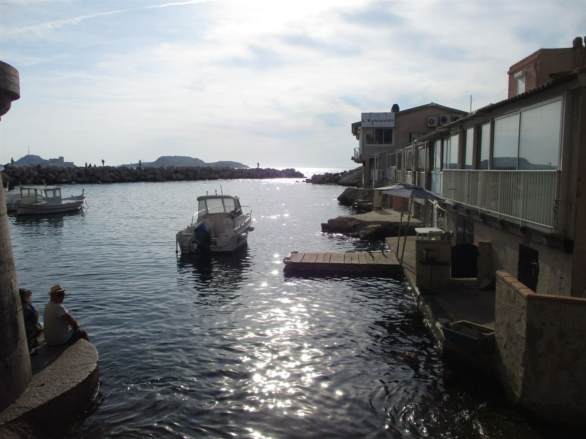
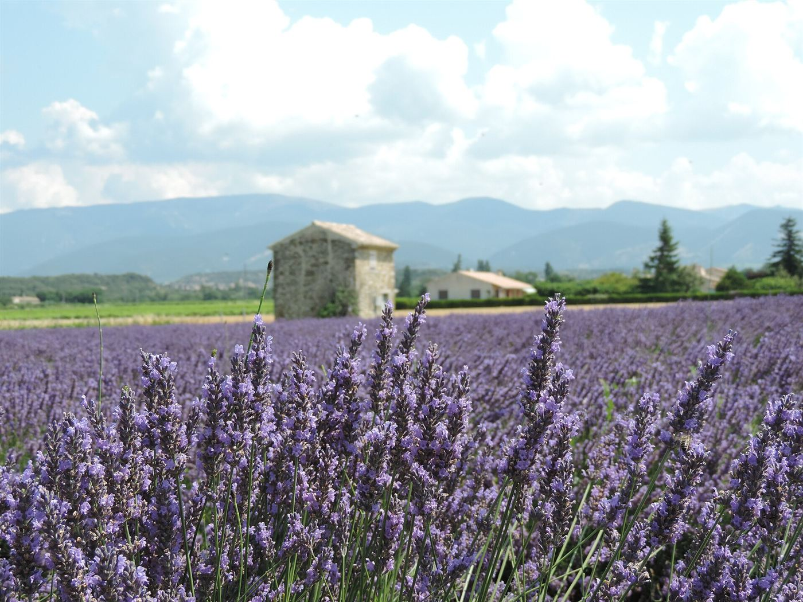
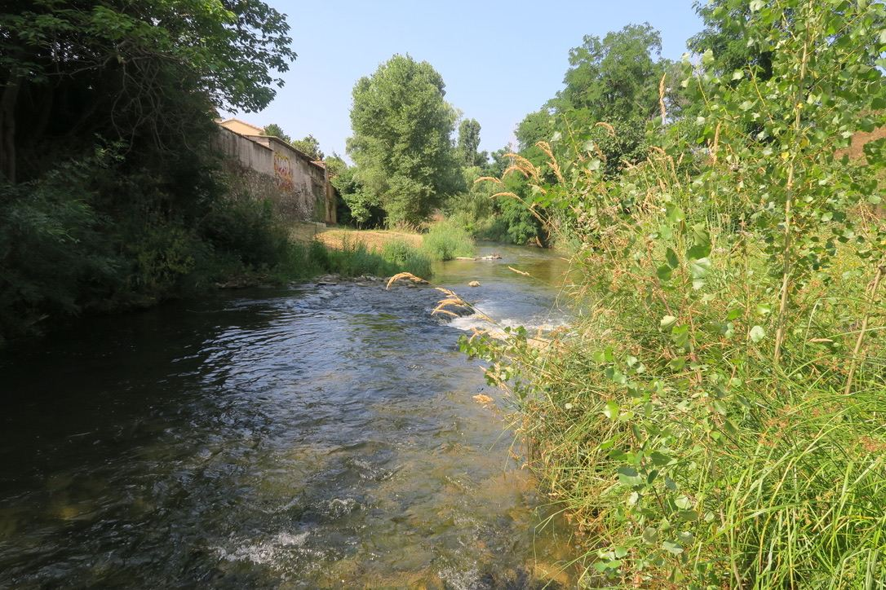

Le soinvient à vous.
Soins infirmiers à domicile à Marseille 13010, avec une attention particulière aux soins palliatifs et à l'accompagnement de fin de vie.
Chez vous, près des vôtres, une équipe qui prend le temps, du quotidien à la fin de vie.

Nos soins à domicile
Des actes infirmiers réalisés sur prescription médicale, et un accompagnement attentif du patient et de ses proches, en lien avec le médecin traitant.
Soins courants
- Injections : insuline, anticoagulants…
- Pansements simples et complexes
- Prises de sang et bilans
- Surveillance des constantes
- Suivi post-opératoire
Soins palliatifs
- Gestion de la douleur
- Soins d'hygiène et de confort adaptés
- Présence et écoute du patient
- Lien avec les équipes de soins palliatifs
Familles et médecins
- Écoute et soutien des aidants
- Explications claires sur les soins
- Orientation vers d'autres ressources
- Transmissions au médecin traitant
Soins palliatifs et fin de vie
C'est notre spécialité. À ce moment de la vie, chaque geste compte : nous soulageons la douleur, préservons le confort et la dignité, et restons présents pour le patient comme pour ses proches, chez lui, entouré des siens.
- Gestion de la douleur et du confort
- Soins d'hygiène et de confort adaptés
- Présence et écoute du patient et de la famille
- Coordination avec les équipes de soins palliatifs

Comment ça se passe
Une prise en charge simple et rassurante, du premier appel au suivi dans la durée. Le premier échange est gratuit et sans engagement.
Premier contact
Vous nous appelez ou nous écrivez pour nous parler de la situation : les soins nécessaires, le contexte médical, une urgence éventuelle.

Évaluation
Nous échangeons avec vous et, si besoin, avec le médecin traitant ou l'hôpital, pour prévoir le matériel et les soins nécessaires.

Mise en place
Un planning de passages est établi avec vous, selon les horaires de traitement, les habitudes du patient et les disponibilités de la famille.

Suivi continu
Les soins évoluent avec l'état de santé : nous ajustons l'accompagnement avec le médecin et la famille, et restons joignables.

Notre secteur : Marseille 10e
Le cabinet est au 5 boulevard Rouvier. Nous passons chez les patients du 10e arrondissement et des quartiers voisins ; appelez-nous pour vérifier notre disponibilité dans votre rue.
La Capelette Menpenti Pont-de-Vivaux Saint-Loup Saint-Tronc La Timone
À lire
3 articles
Comprendre les soins palliatifs
3 minCe que recouvre réellement l'accompagnement de fin de vie, et comment il aide patients et familles.
Le déroulement d'une prise en charge
3 minDu premier appel à la mise en place des soins : à quoi s'attendre concrètement.

Accompagner un proche en fin de vie
3 minQuelques repères pour les aidants, souvent en première ligne face à la maladie.